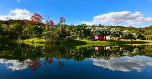
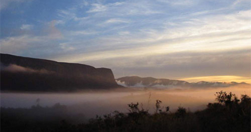
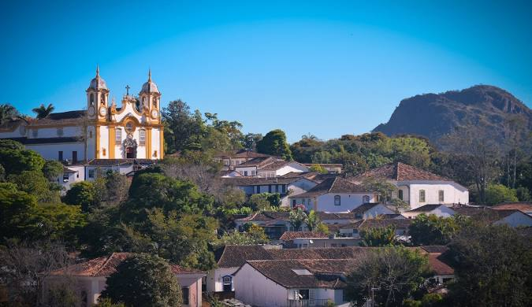

Bem-vindo a EuroTour
Instituto Inhotim
O Instituto Inhotim, localizado em Brumadinho a 60 quilômetros de Belo Horizonte, capital do Estado de Minas Gerais, a terceira maior região metropolitana do Brasil. Com uma área de 140 hectares de visitação composta por floresta e jardim botânico, o Inhotim possui uma coleção de arte internacionalmente reconhecida.
Parque Nacional da Serra da Canastra
Criado em 1972, o Parque Nacional da Serra da Canastra tem aproximadamente 93 mil hectares demarcados e parte do território de 6 municípios: São João Batista do Glória, São Roque de Minas, Vargem Bonita, Sacramento, Delfinópolis e Capitólio, no Sudoeste de Minas Gerais.
Tiradentes
Tiradentes é uma cidade no sudeste brasileiro. É conhecida pela sua arquitetura da era colonial barroca, principalmente a Igreja Matriz de Santo Antônio. Esta igreja possui centenas de quilos de decoração em ouro e uma fachada concebida por um escultor brasileiro, o Aleijadinho. Nas proximidades, a Igreja de Nossa Senhora do Rosário é uma igreja do século XVIII construída por escravos. As lojas de artesanato preenchem a praça central da cidade, o Largo das Forras.
Sobre nós
EuroTour é um site que ajuda você a planejar sua viagem para a Europa, desde a compra das passagens, até a visita aos pontos turísticos mais importantes de cada região!